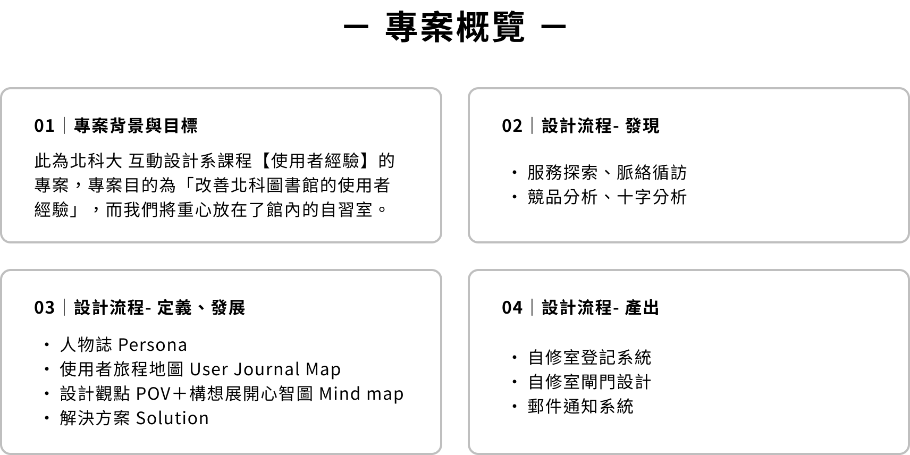
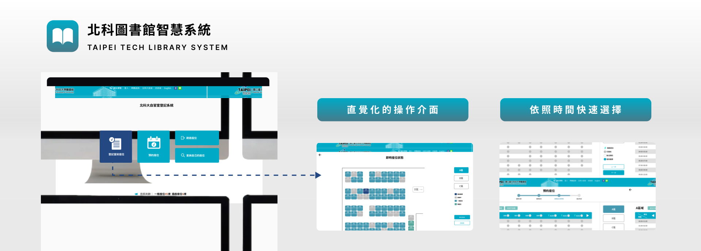
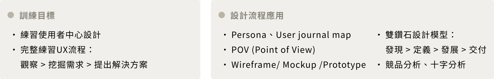
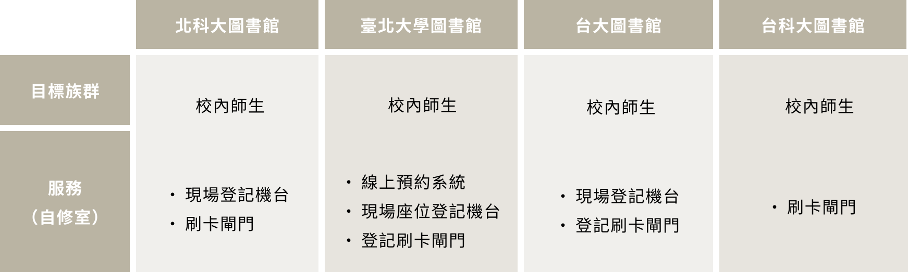
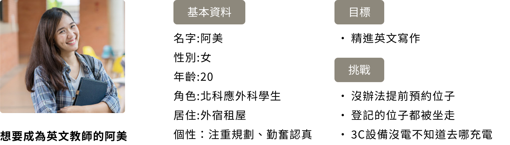
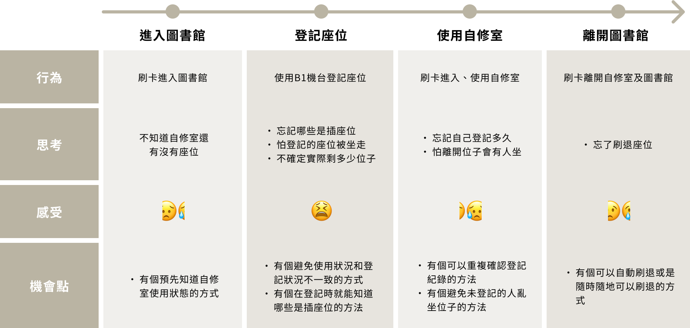
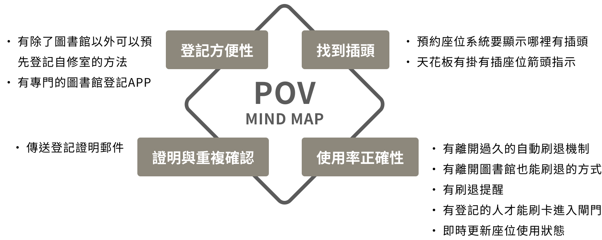

背景與目標
此為北科大 互動設計系課程【使用者經驗】的專案，專案目的為「改善北科圖書館的使用者經驗」，而我們將重心放在了館內的自習室。


服務探索
＋脈絡詢訪
透過服務探索（親自體驗服務）和 脈絡詢訪（觀察空間中的人事物互動），我們觀察到：

競品分析
我們比較了其他大學的自修室機制及設備，來和北科大自習室做比較：

人物誌
我們透過人物誌去探討，北科自修室的主要使用者的特質以及需求：

使用者旅程地圖
透過使用者旅程地圖，我們能更全面的去發現使用者可能遇到的問題以及需求，以發展更完整的解決方法。

設計觀點
最後我們整理出了設計觀點，釐清使用者的主要需求：

構想展開心智圖
構想展開心智圖讓我們以「發散」的模式來發想各種可能的解決方法：

解決方案
此為北科大互動設計系的課程【使用者經驗】，以北科大圖書館為題目，從同理、定義、發想到產出原型，優化使用者經驗。我們將重心放在圖書館自修室，主要希望改善登記、刷退等的不方便。
原型製作
此為北科大互動設計系的課程【使用者經驗】，以北科大圖書館為題目，從同理、定義、發想到產出原型，優化使用者經驗。我們將重心放在圖書館自修室，主要希望改善登記、刷退等的不方便。